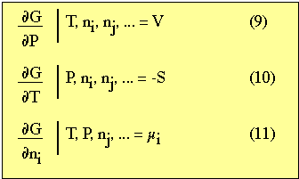
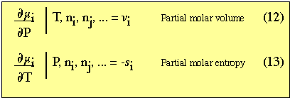
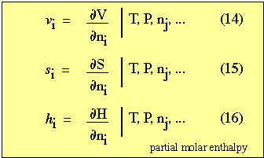
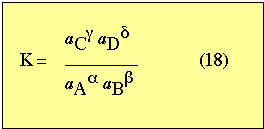
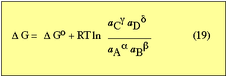
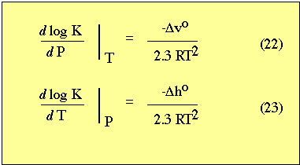
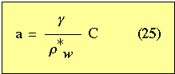

Background reading on principles of physical
chemistry.
Nordstrom D. K., and Munoz J. L. (1985)
Geochemical Thermodynamics: Benjamin/Cummings Publishing Co., Inc.,
Menlo Park, CA
Berner R. A. (1980) Early Diagenesis: A Theoretical Approach: Princeton
University Press, Princeton, NJ
Denbigh K. (1981) The principles of chemical equilibrium - 4th edition:
Cambridge University Press, Cambridge, U.K.
Robie R. A., Hemingway B. S., and Fisher J. R. (1984) Thermodynamic properties
of minerals and related substances at 298.15 K and 1 bar (10+e5 pascals)
pressure and higher temperature: Bulletin 1452, U.S. Geological Survey,
Washington DC.
Wood B. J., and Fraser D. G. (1984) Elementary Thermodynamics for Geologist:
Oxford University Press, Oxford
Sposito G. (1994) Chemical equilbria and kinetics in soils: Oxford
University Press, New York, 268.
Review of physical chemistry - The purpose is to provide a brief outline of physical
chemical principles important to the study of clay mineralogy. Emphasis
will be placed on the understanding of:
* chemical equilibria
* thermodynamics of electrolyte solutions
* crystal nucleation, growth and dissolution
* colloid chemistry
It will be assumed that you have some background in geochemical principles
(i.e., concepts taught in first year college chemistry, mineralogy
and introductory geochemistry or aqueous chemistry).
Equations useful to clay mineralogy can be derived from a few basic chemical
thermodynamic equations. These include:
1. The combined first and second laws of thermodynamics:
dU = TdS - dW+ µ idn i+ µj dn j ....
(1)
where:
U = internal energy (KJ/mol or Kcal/mol)
T = absolute temperature °K
S = entropy (A thermodynamic measure of the disorder in a system. In a
closed system, entropy increases.) Measured from heat capacity data. At
T = 0°, entropy may become zero.
W = work
µ = chemical potential of components i, j, ...
n = number of moles of components i, j, ...
2. Some expressions for work
dW = P dV (mechanical work) (2)
dW = E dZ
(electrical work) (3)
where:
P = pressure
V = volume
E = electric potential
Z = charge
3. Definitions of enthalpy H (heat content) and Gibbs free energy
G.
where:
H = U + PV (4)
G
= H - TS (5)
4. Definition of chemical activity.
µ i = µio + RTln a i (6)
where:
µ io = chemical potential
in a standard state* of component i.
a i = activity of component i.
R = gas constant.
* caution there are several different choices of
standard states.
Items 1-4 can be considered as definitions. These definitions are combined
with the criterion that the free energy for a chemical reaction at equilibrium
is equal to zero. From mathematical derivation, equations are developed
to study the chemical reactivity of clay minerals in sedimentary, weathering
and diagenetic environments.
An important derivation from equations 4 and 5 includes:
dG
= U + PdV + VdP - TdS - SdT (7)
and substituting of equations 1 and 2 into equation
7 yields,
dG = VdP - SdT + µ i dn i + µj dn j + ... (8)
From equation 8 through partial differentiation,

From equation 8 through double differentiation,

where,

Equation 8 at constant P and T can be integrated
at constant µ to give;
G = µi ni + µj nj +.... (17)
Equilibrium Processes
The change in concentration of any particular clay mineral phase occurs
in response to the chemical state of the system. The primary processes that
control the chemical state of a system include:
1. advection
2. diffusion
3. chemical reaction
The chemical reaction term is the driving force to compositional change and can be written in the general form:
aA + bB --> gC + dD,
where; A, B are the reactants and C,D are the products
and a, b, g and
d are the relative
number of moles of each.
If the rate of chemical reaction is very rapid (in spite of advective and
diffusive processes)and chemical equilibrium is maintained, then a thermodynamic
approach to chemical reaction is possible.
In reality, NO net reaction can occur at equilibrium. However, the assumption
is that there is so little kinetic impedance to the reaction that reactions
occur at very small departures from equilibrium.
How does one determine equilibrium concentrations?
This is expressed by way of the thermodynamic equilibrium constant which
is related to the Gibbs free energies (G) of the reactants and products.
Let:
K = thermodynamic equilibrium constant
then one can write:

Which can be stated as the activities (a)
of the product over the reactants, each raised to the power of the relative
molar abundance (at this point activities are assumed to be equal to molar
concentrations, althought this not the case; see below).
The difference in free energy (DG) is a useful parameter
to assess the tendency or likelihood for a given chemical reaction to proceed.

For a chemical reaction to proceed spontaneously in the direction of the
arrow, D G must
be less than zero (there must be a decrease in free energy).
If DG = 0 , then
the reaction will not proceed in either direction (at equilibrium state).
In this case,
DGo = - RT ln K (20)
Many calculations are done at 25° C (this is the form in which data
are tabulated See Robie reference).
At 25° C (298° Kelvin)
DGo = - 1.364 log K (log = base 10) (21)
To adjust K for chemical reactions at different temperature and pressures,
the correction can be made with the following equations:

a =
gm (24)
where:
g= conventional
molal activity coefficient (approaches one as solutions become more dilute).
m = molality (moles per kg of H2O).
In terms of concentration of per unit volume of pore solution (C):

where r*w = mass of water per unit volume of
interstitial solution.
In near surface conditionsr*w =
1 therefore,
a = gm
The solid solutions can be expressed as
a =
lX
where:
l = rational
molal activity coefficient (for major components as X approaches one so
does l).
X = mole fraction of an end-member in a solid solution.
In most sedimentary systems we deal with end-members therefore, X = 1 and
l= 1.
Hence: a = 1 for solids.
Also most pore waters are sufficiently dilute, that the activity of H2O can be considered to be one.
a H2O = 1
For surface species adsorbed onto the surface of a clay, there is a special
convention adopted where:
a =
y C
where:
y= surface activity
coefficient
C = mass absrobed per unit mass of total sedimentary solids.